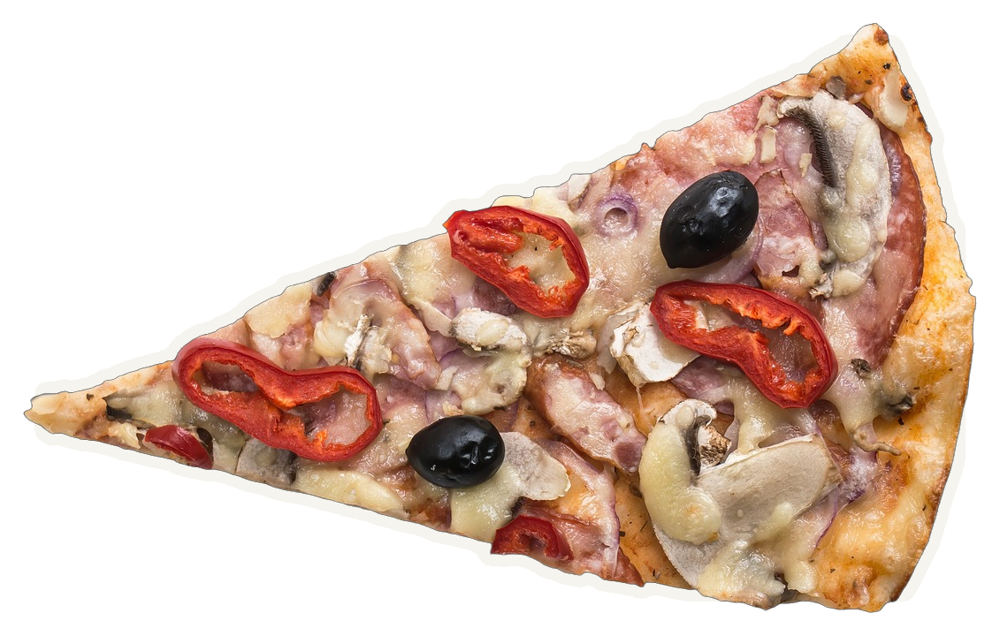
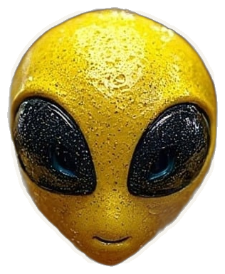
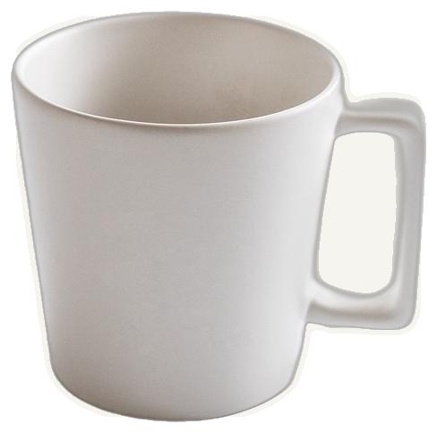
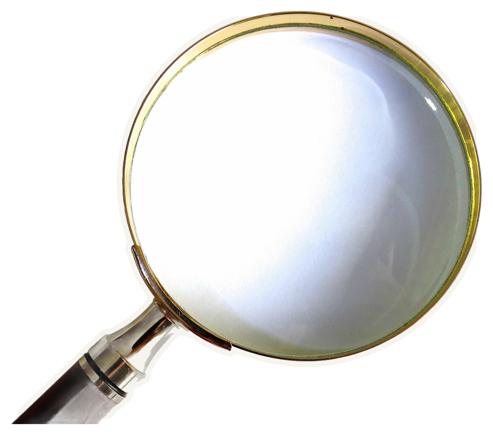
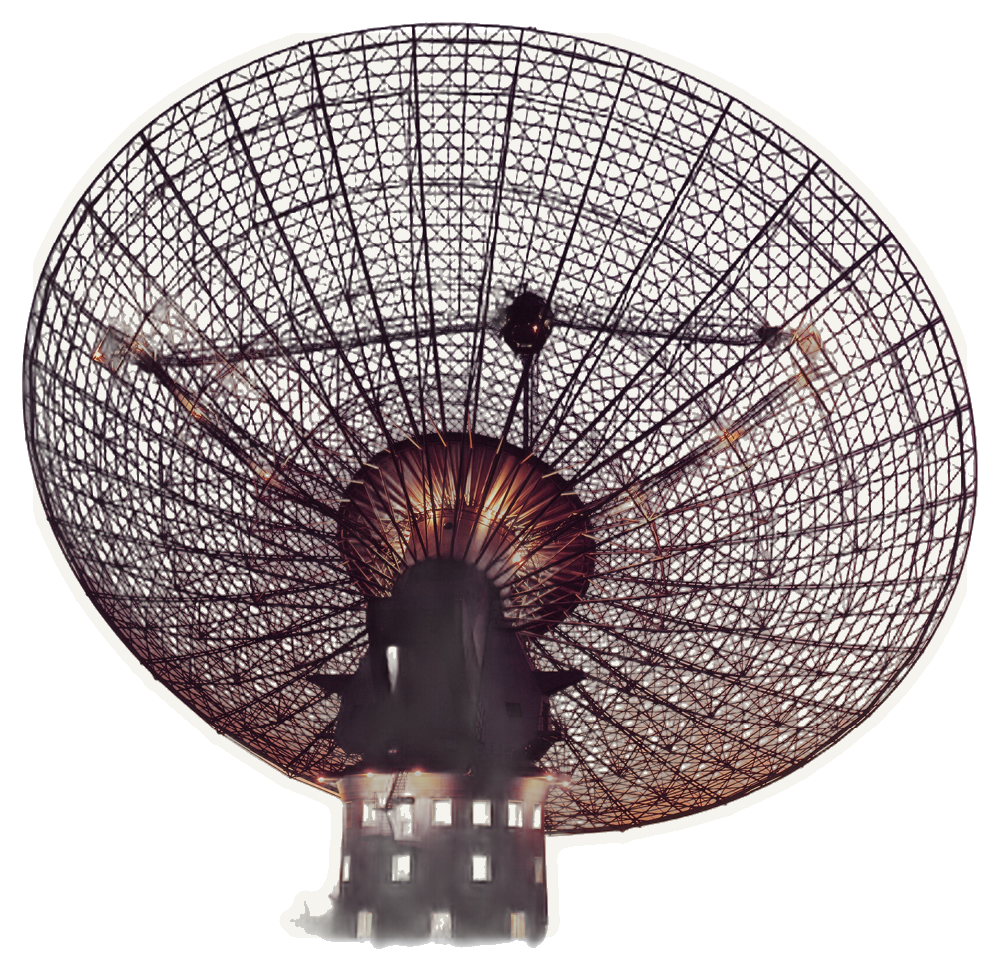
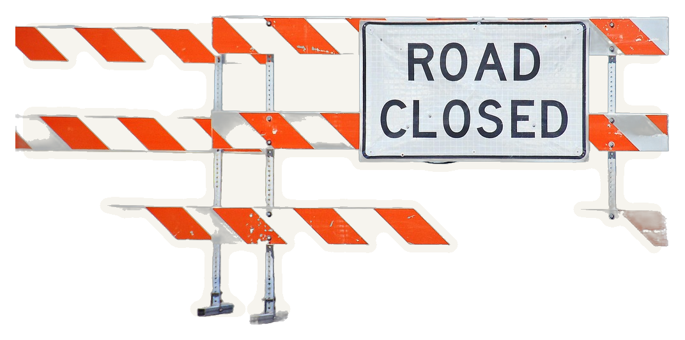
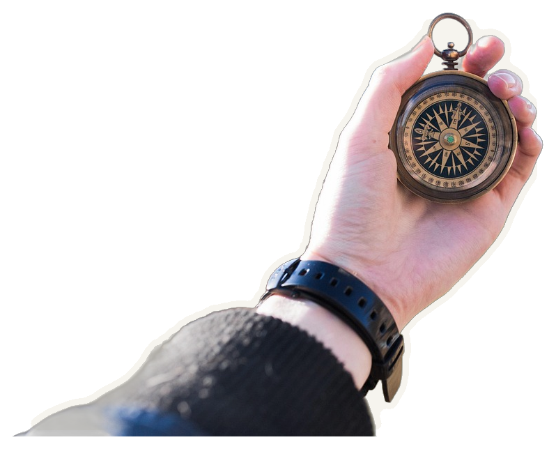

АПРЕЛЬ 2015


«„Инопланетный“ сигнал из космоса оказался парнем, который разогревал пиццу»
The New Daily · 14.04.2015

В САМОЙ ЗАМЕТКЕ
речь об обеде, «пицца» — только в заголовке

«Teenagers from Outer Space», 1959

не искали пришельцев — искали, откуда помехи
Эмили Петрофф · The Conversation
АНЕКДОТ
«учёные искали пришельцев и нашли кухню»
РАБОТА
«учёные нашли, где их прибор врёт»


?
 МЕМ
МЕМFRB — ЭТО ОБЕД?

ПОЧТИ СОВПАЛО

05:50
утро · местное время · всплеск Лоримера
 центр для посетителей
центр для посетителей

зеркало закрывает кабину — печь «не докричится»
НА ЮГ
ВСПЛЕСК ЛОРИМЕРА · 3 ЛУЧА ИЗ 13
как и положено точечному источнику

MNRAS 451:3933 · аннотация · 2015
МЕМFRB — НАСТОЯЩИЕ
НАСТОЯЩИЕ ГОСТИ ИЗДАЛЕКА
17 ЛЕТ В ТЕНИ ПЕРИТОНОВ
PLOT TWIST
B · НАУКА ИЗНУТРИ · 01